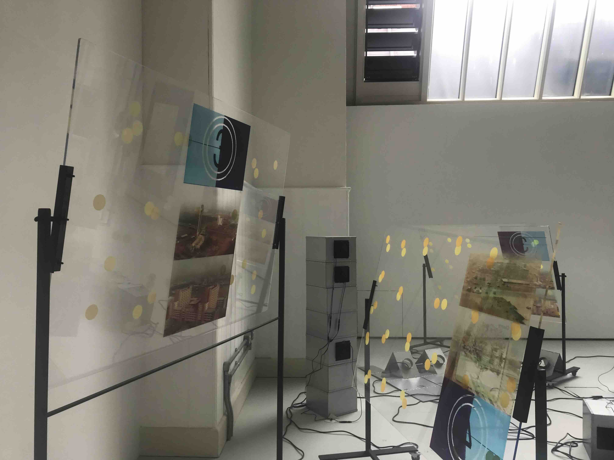
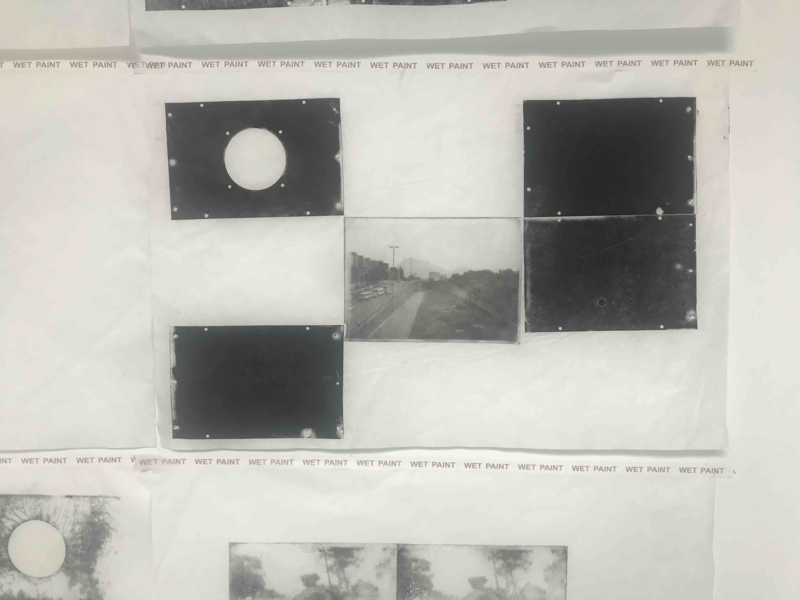
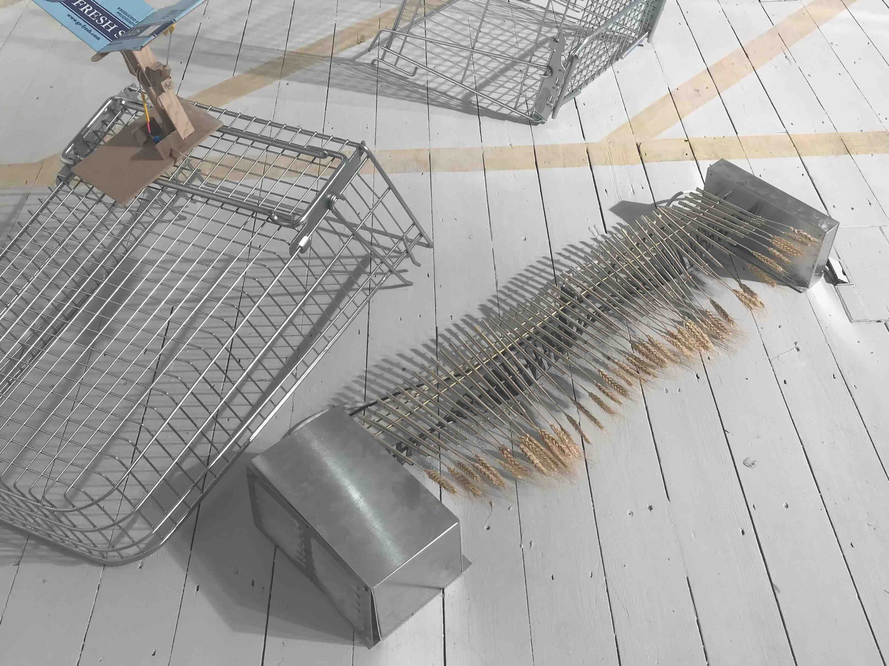
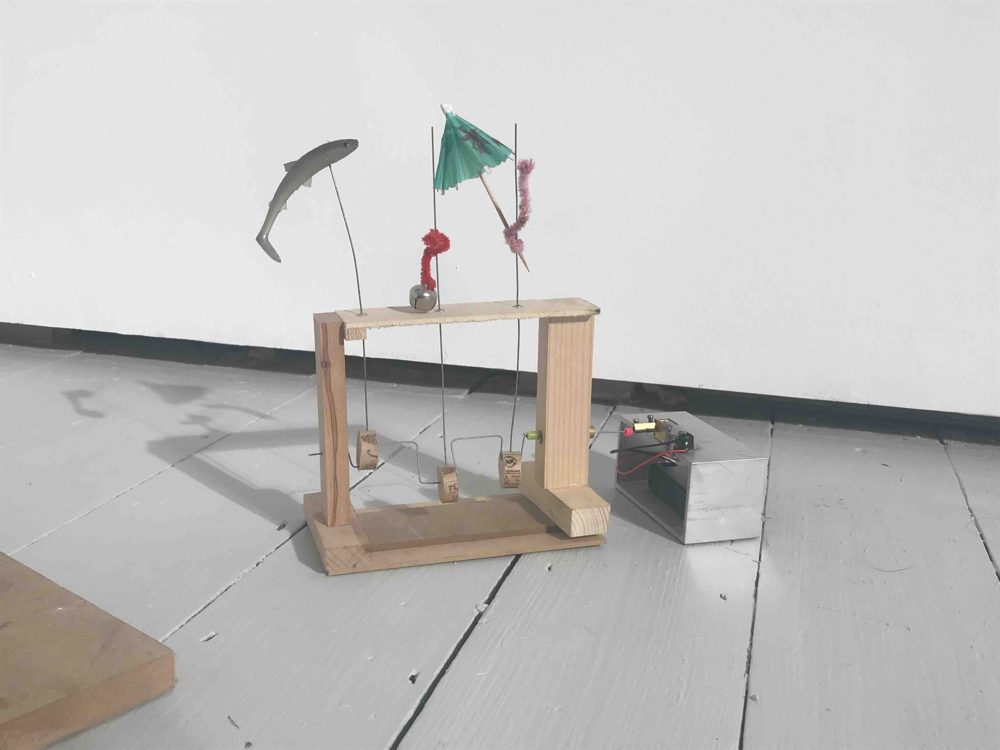

Rahima Gambo


Katrina Cowling
"making can be described as a way to think and feel from the inside out,
inhabiting the gap where documentation fails...
by employing the material processes of resistance and negotiation, meaning
shifts or becomes porous, narrartives emerge from the incomplete or
peripheral and are continuously indone and reconstituted" - class of 2026